作品集
洪水后的小屋
“洪水退去后，这片洼地依旧潮湿。锈蚀的高塔沉默地矗立在雨幕中，唯有那扇亮着灯的窗，还留着一丝人曾在此生活过的痕迹。”
洪水后的小屋是一处被水淹没的乡村环境场景，废弃的砖房与锈迹斑斑的工业高塔并置在雨幕笼罩的湿地之间，营造出潮湿、寂静又略带荒诞的末日氛围。
项目使用模块化建筑资产搭建房屋与工业构筑物，并结合动态雨天氛围与灯光设计，在 Unreal Engine 中还原出洪水过后村落的压抑与孤寂感。
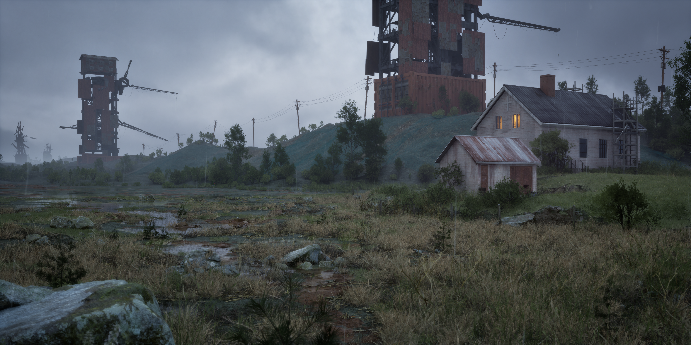
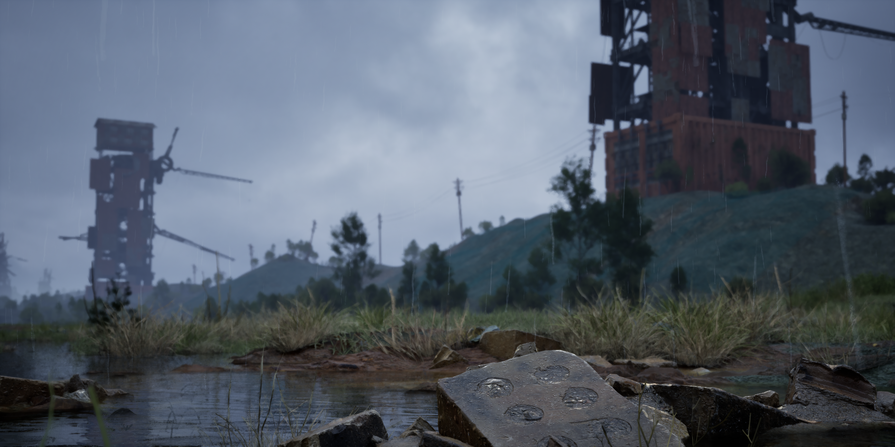
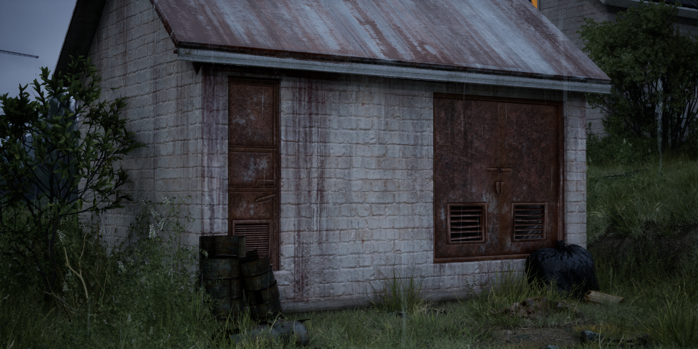
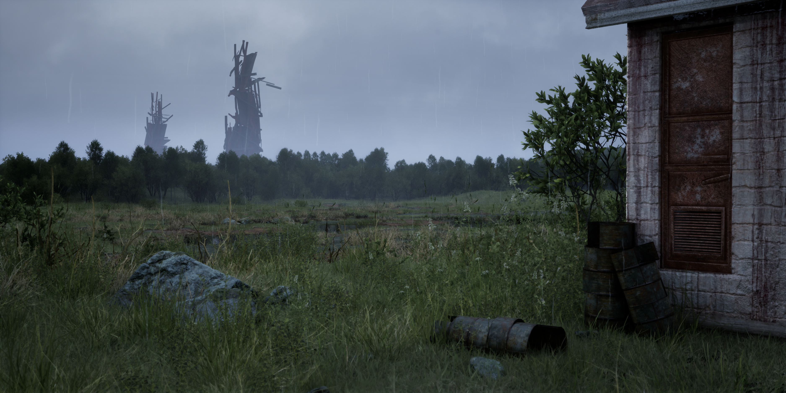
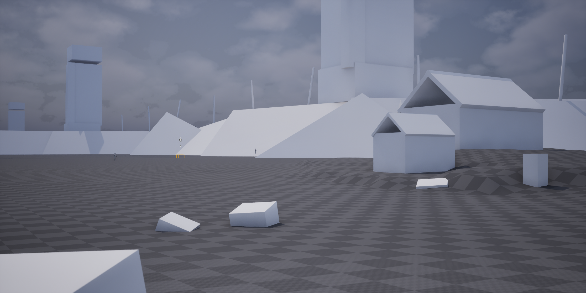
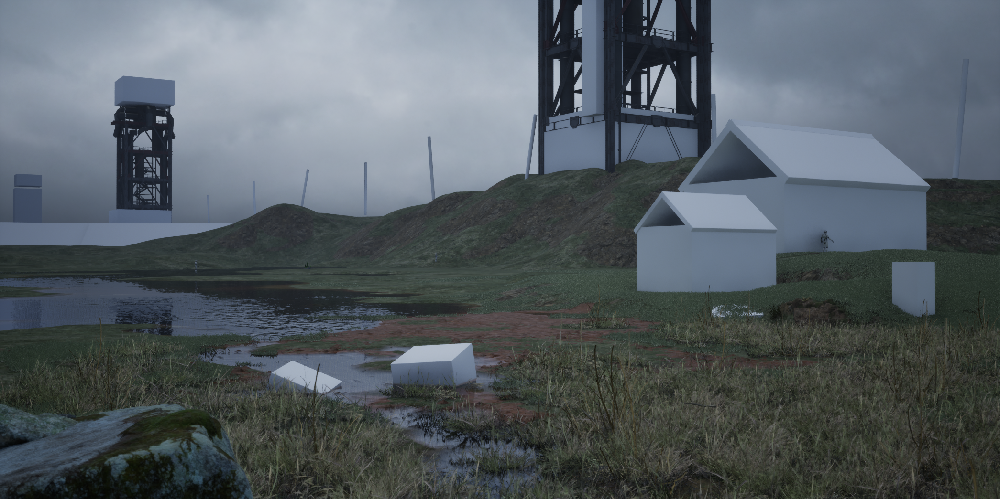
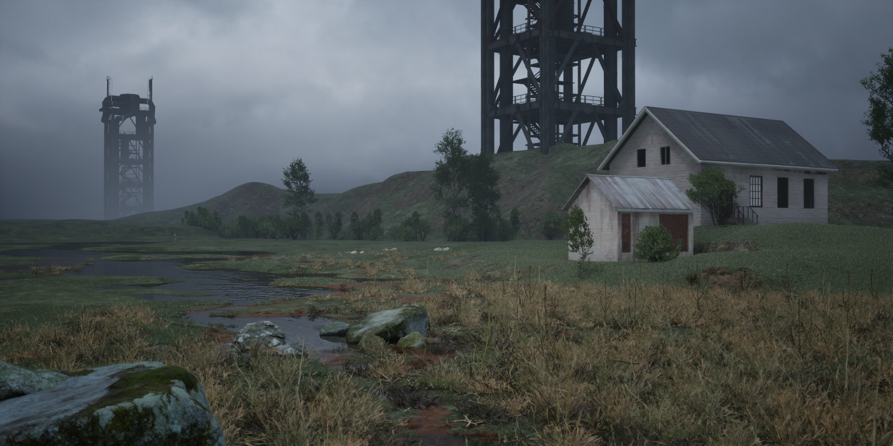
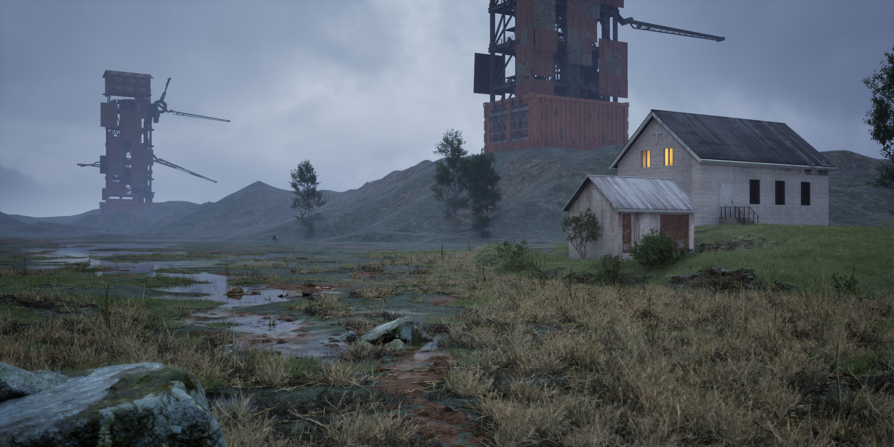
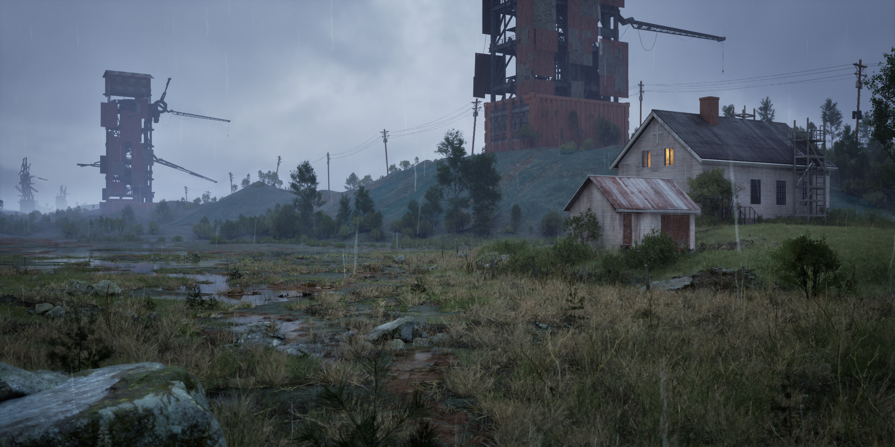
资产制作
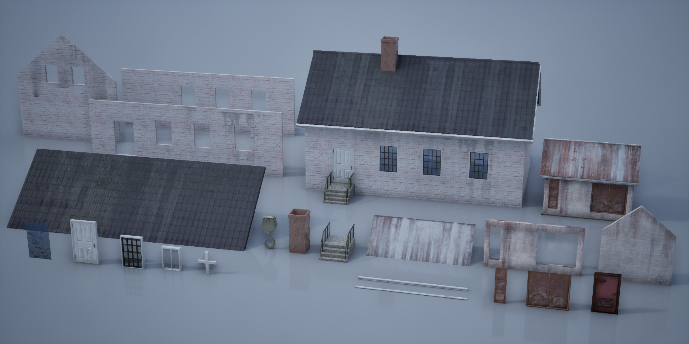
参考与过程
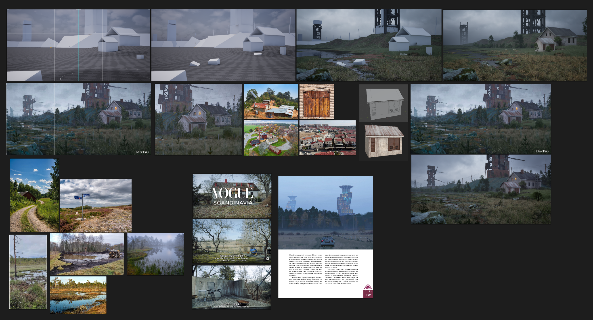